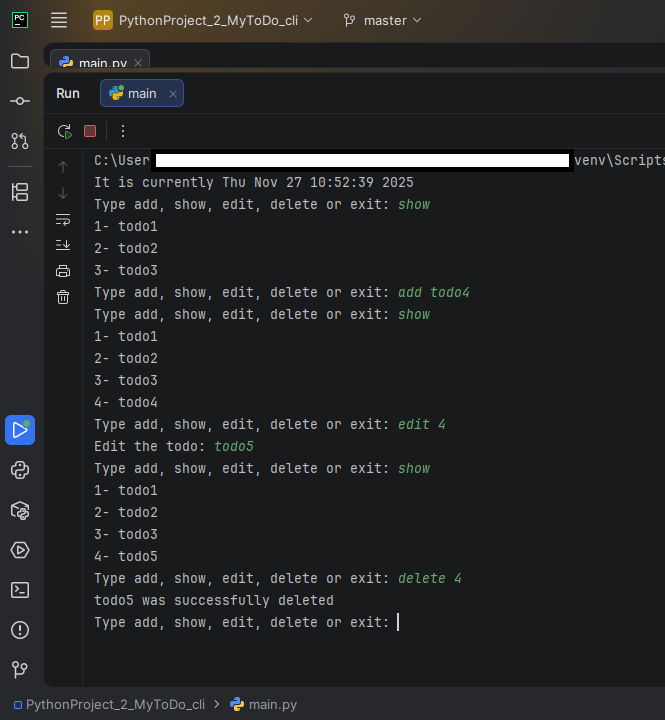

Paul Grant
Python Developer & Data Analyst
A passionate developer and data analyst focused on transforming data into actionable insights using Python and its powerful libraries (NumPy, Pandas, Matplotlib, Seaborn), alongside tools like SQL, Microsoft Excel, and Tableau.
Python Projects

To-do App CLI
A command line interface app built using python to store, edit and delete user to-dos.
Technologies: Python
View on GitHub →
To-do App GUI
A To-do App built using Python with a Graphical User Interface.
Technologies: Python, FreeSimpleGUI
View on GitHub →
CLI File Organizer
A command-line tool to automatically sort and organize files in a directory based on type, size, or date.
Technologies: Python, argparse, os/shutil modules, Unit Testing
View on GitHub →Data Analytics Projects
Sales Insights Dashboard
Analyzed sales data to uncover customer trends and product performance, presented through interactive Tableau dashboards.
Tools: Pandas, SQL, Tableau
Customer Segmentation
Performed clustering analysis to segment customers based on spending habits and demographic features.
Tools: Python, Scikit-Learn, Matplotlib
Financial Forecasting Model
Built predictive models to forecast revenue and expenses using time-series analysis.
Tools: Python, Pandas, Statsmodels
Let's Work Together
Interested in collaborating or need help with a Python or data analytics project? I'm always open to new opportunities and challenges.
Contact Me